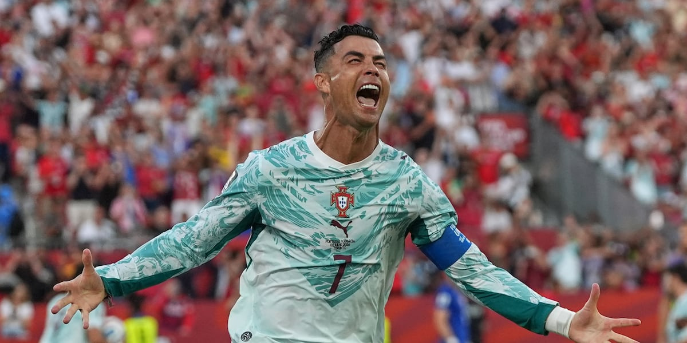

Jeered by Home Fans at the 2026 World Cup
Home fans boo: At the 2026 US-Canada-Mexico World Cup, before the round-of-16 match against Croatia, when the stadium announcer read Ronaldo's name, the stands erupted in cascading boos. Most came from travelling Portuguese supporters — once-deity compatriots now voicing displeasure the most direct way they could.
The 41-year-old's disputed start: Ronaldo was now 41 years old, his stamina and impact visibly declined. Most fans and pundits felt he was blocking younger forwards and slowing the team's tempo. Behind the boos lay Portuguese collective anxiety about 'whether to let the legend bow out with dignity'.
Answering with a penalty: In the 68th minute Ronaldo slotted home a penalty to equalise — his first World Cup knockout goal. He answered the boos in his most trademark way — but ironically the goal came from the spot, not open play, reigniting the 'limited value' debate.
A record across six editions: With that goal Ronaldo became the first player to score at six World Cups and, at 41 years 147 days, the oldest scorer in a World Cup knockout match, surpassing Messi. These records are genuinely glittering, but form an awkward contrast with his declining on-pitch dominance.
'Won the stat, lost the optics': The match was ultimately decided by Gonçalo Ramos's stoppage-time winner, sending Portugal through, but the post-match focus was not Ronaldo's records but whether he should still be the centrepiece. The tension between personal milestones and the collective win was magnified that night.
Totem and burden at once: The match condensed all the paradoxes of Ronaldo's late career — at once Portugal's greatest symbol and the heaviest tactical burden. The boos from his own fans were not ingratitude but a painful, clear-eyed collective letting go.
Verdict: Booed by his own fans, defended by his coach. For many, the jeers marked the beginning of the end: even his traditionally devoted supporters can no longer stomach the Cristiano circus.